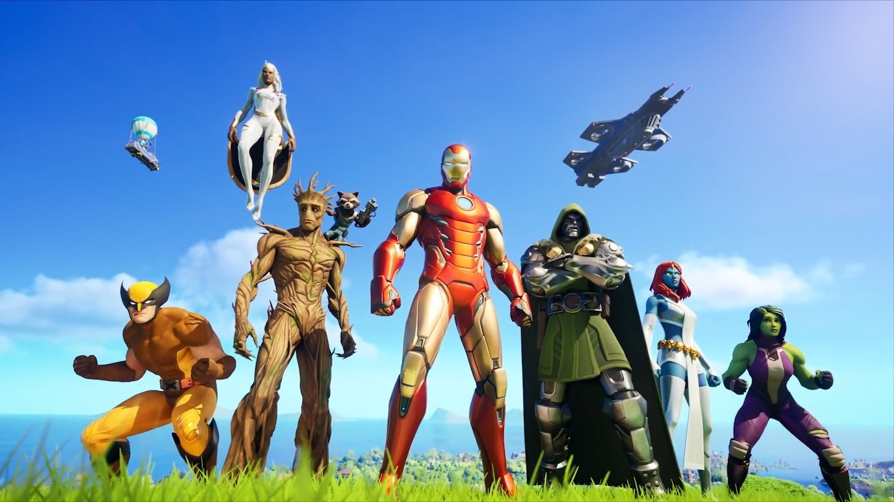

Retornar
Eventos
Fortnite é conhecido por seus eventos emocionantes e inovadores, que mantêm os jogadores engajados e atraem a atenção da comunidade global de jogos. Esses eventos podem variar desde pequenas atualizações sazonais até experiências ao vivo em larga escala dentro do jogo. Aqui estão alguns exemplos de eventos do Fortnite:
1. **Eventos sazonais:** A Epic Games regularmente introduz eventos sazonais em Fortnite para comemorar feriados, como Halloween, Natal e Páscoa. Durante esses eventos, os jogadores podem esperar novas skins temáticas, itens exclusivos, desafios especiais e decorações no mapa do jogo.
 2. **Colaborações crossover:** Fortnite é conhecido por suas colaborações crossover com outras marcas, franquias e artistas. Isso resultou em eventos temáticos baseados em filmes, séries de TV, quadrinhos, músicos e muito mais. Por exemplo, o jogo já recebeu eventos baseados em Vingadores, Star Wars, Marvel, DC Comics, Travis Scott e Marshmello.
2. **Colaborações crossover:** Fortnite é conhecido por suas colaborações crossover com outras marcas, franquias e artistas. Isso resultou em eventos temáticos baseados em filmes, séries de TV, quadrinhos, músicos e muito mais. Por exemplo, o jogo já recebeu eventos baseados em Vingadores, Star Wars, Marvel, DC Comics, Travis Scott e Marshmello.

3. **Concertos ao vivo:** O Fortnite é pioneiro em eventos de entretenimento ao vivo dentro do jogo, como concertos de música ao vivo. Esses eventos, que incluem artistas famosos como Travis Scott e Marshmello, transformam o mapa do jogo em um palco interativo, onde os jogadores podem assistir e participar de performances espetaculares em tempo real.
4. **Temporadas e eventos narrativos:** Cada nova temporada de Fortnite traz consigo uma história narrativa que se desenrola ao longo do período. Os eventos dentro do jogo muitas vezes coincidem com o desenvolvimento dessa história, introduzindo novos elementos de jogabilidade, mudanças no mapa e reviravoltas na trama que mantêm os jogadores intrigados e ansiosos para descobrir o que acontecerá em seguida.
5. **Finais de temporadas e eventos de encerramento:** No final de cada temporada, Fortnite geralmente organiza eventos de encerramento que alteram dramaticamente o estado do jogo. Isso pode incluir eventos de início de temporadas futuras, como explosões épicas, mudanças no mapa ou mesmo eventos de transição para uma nova era no jogo.
Em resumo, os eventos do Fortnite são uma parte essencial da experiência do jogo, oferecendo aos jogadores novas maneiras de se envolver, explorar e se divertir dentro do mundo dinâmico e em constante evolução de Fortnite.
Feito por michel jackson